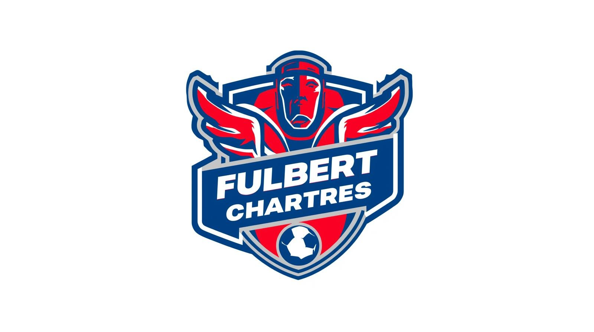

Structure de page, travail editorial et logique de visibilite.
Case study
FC Fulbert
Un challenge SEO construit autour d un mot-cle vierge pour comprendre la structure, le contenu et la diffusion necessaires a un meilleur positionnement Google.

Etat
Site accessible
Le projet est visible en ligne sur fcfulbertchartres.github.io.
Faire emerger une requete inexistante sur le web au depart.
Un exercice pedagogique centre sur les leviers de referencement naturel.
Une vitrine publiee pour observer le rendu et la presence sur le web.
Challenge
Comprendre comment un mot-cle peut emerger a partir de zero.
Le principe etait simple : travailler autour de "FC Fulbert", une requete encore vide, puis deployer un site assez clair et coherent pour lui donner une existence visible sur Google. Ce projet m a permis de lier structure technique, redaction et diffusion dans une meme logique de referencement.
Strategie
Structure semantique
Travailler la hierarchie HTML et la lisibilite des contenus pour aider la comprehension du sujet.
Contenu cible
Mettre en avant le bon vocabulaire, le bon angle editorial et une coherence textuelle suffisante.
Presence en ligne
Donner au projet une existence publique afin de mesurer sa visibilite et sa credibilite.
Stack
Un projet simple techniquement, mais precis dans son intention.
SEO
HTML
CSS
JavaScript
Publishing
- Travail sur la structure du site et la logique de contenu plutot que sur une complexite applicative forte.
- Attention portee a la clarte de lecture, a la coherence des blocs et a la perception globale du site.
- Publication en ligne pour observer l impact concret de l execution et des choix de referencement.
Suite
Voir le site en ligne et la direction SEO mise en place.
Ce projet montre surtout ma capacite a penser un rendu simple, propre et intentionnel, avec une lecture SEO plus produit que purement decorative.